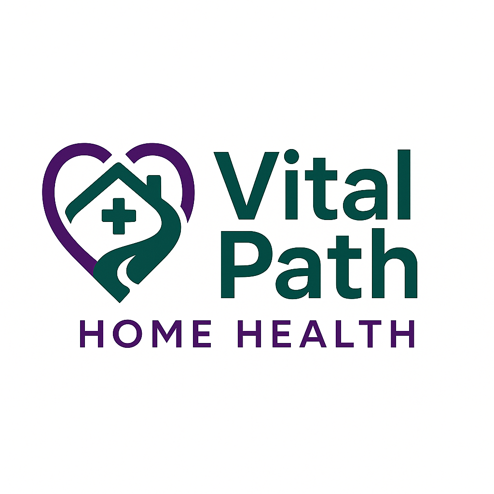

In Development
VitalPath is being built under board governance and clinical leadership to ensure safe, compliant, partner-ready home health operations.
We are sequencing launch to protect quality, staffing, clinical reliability, and partner confidence. This page will expand as the division is activated.
Home-based coordination designed to support recovery and long-term wellness.
Clear intake, documentation, and communication aligned to partner workflows.
Governance-aligned processes that protect patients and ensure reliable follow-through.
Phased launch under accountable leadership with measurable quality goals.